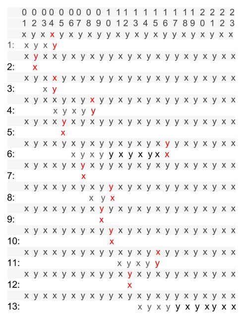
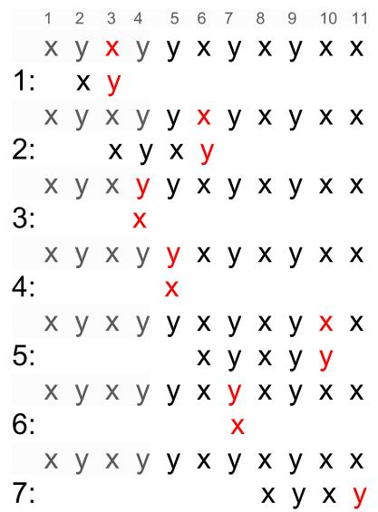

字符串匹配--KMP算法
字符串匹配是经常用到的操作，KMP算法是由3个人的名字的开头字母组成的，KMP算法的全称是Knuth-Morris-Pratt算法，其中K就是大名鼎鼎的Donald Knuth。
暴力匹配
字符串匹配简单的方法使用暴力算法。使用的示例是T = xyxxyxyxyyxyxyxyyxyxyxx， P = xyxyyxyxyxx, 要在T中找到P中开始出现的位置。

第一次因为T[4] 和 P[4]不匹配, 则重新开始，从T[2]开始，依次比较。
KMP算法
改进
回过头看看暴力求解的算法，其实当没匹配时，没必要每次向右移动一位重新进行比较，因为当在某个位置T与P不匹配时，可以利用已经匹配的位置的信息来将P尽量一次向右移动多位。
比如上图中的匹配过程，在第4次匹配过程中，当匹配到第5个字符时，发现了不匹配字符，但是前面4个字符是匹配的，通过P可以知道T中匹配的4个字符xyxy，这四个字符的后缀是P[1..4]=xyxy，P[2..4]=yxy，P[3..4]=xy，P[4..4]=y，去掉第一个后缀后，则剩下P[2..4]=yxy，P[3..4]=xy，P[4..4]=y，我们让这三个后缀与匹配的字符串从开始位置进行比较，发现P[3..4]=xy可以匹配4个字符中的前两个字符，我们可以直接将P向右移动两位，因为我们知道向右移动一位T中与P比较的3个字符就是yxy, 但是这三个字符通过上面P[2..4]的比较过程可以知道并不能与P中前三个字符匹配，因此可以直接跳过。
next表
注意上述的过程是可以重复使用的，比如没动T中的字符与P[5]不匹配时，都可以将P字符串向右移动两位，因此我们有必要建一张表，表中存的信息是当某位与T中的字符不匹配时我们应该将P字符串向右移动几位，这张表我们称为next表。
为了理解这张表是如何构造的，我们在说明一下，在暴力匹配中的第6次匹配过程中，P[11]与T中的字符不匹配，考察P[1..10]=xyxyyxyxyx, 因为刚经过匹配，可以知道P[1..10]=A[6..15]，因此可以利用这个信息来确定需要将P向右移动几位。这就是计算和P中的前缀匹配的P[1..10]中的最大后缀，和前面的例子类似，如图可以看出满足条件的后缀长度是3。

下面介绍构造表的思想，对每个P中的位置i都要计算出P[1..(i-1)]的最大后缀，如果后缀的长度是j，则T中当前不匹配的字符就可以跳过多余的比较过程直接跟P[j+1]比较，因为已经知道T中最近匹配的j个字符能和P的前缀字符匹配。而且还可以知道我们得到的是最大后缀，所以P在向左一位就不能匹配了。
现在假设有了next表，next表中的值如下图
| 位置 | 1 | 2 | 3 | 4 | 5 | 6 | 7 | 8 | 9 | 10 | 11 |
|---|---|---|---|---|---|---|---|---|---|---|---|
| 字符 | x | y | x | y | y | x | y | x | y | x | x |
| next | -1 | 0 | 0 | 1 | 2 | 0 | 1 | 2 | 3 | 4 | 3 |
匹配算法
现在有了next表，介绍一下匹配过程。
T中的字符与P中的字符一一比较，直到出现不匹配。假设不匹配发生在P[i], 查找next表，然后将当前的T中的字符与P[next[i]+1]比较，仍然不匹配，则与P[next[next[i]+1]+1]比较，直到匹配为止。若最后到P[1]仍不匹配，在T中向右移动一位，重新开始匹配过程。
next表的计算
现在介绍如何计算next表。利用归纳法，现在next[2]=0作为归纳基础，假设计算出1,2,3….i-1的next值，可以根据计算出来的next值计算next[i],分两种情况：
1.若P[ -1]=P[next[i-1]+1],说明P[i-1]可以扩展最大后缀，next[i] = next[i-1] + 1;
2.若P[i-1]!=P[next[i-1]+1],现在已经知道P[1..(i-2)]的最大后缀是和P[1..next[i-1]]匹配的，P[i-1]!=P[next[i-1]+1],相当于在P[next[i-1]+1]处发生了不匹配。上面的匹配过程已经说过，若P[next[i-1]+1]不匹配，就去查P[next[next[i-1]+1]+1],看是否与P[i-1]相匹配，直到查到匹配，或是回到开始位置。
复杂度
T中的字符要与P中的字符比较，若匹配，则继续，若不匹配，则T中的当前字符要与P中next表中指向的字符比较。若T[i]不匹配，那么需要查找几次next表呢，若与P[k]不匹配，最多查找k次，这相当于P向前移动了k位，最多需要前移n次，因此算法复杂度为O(n)。
注：本文是根据《算法引论——一种创造性方法》（Introdction to Algorithms: A Creative Approach）中的5.8节整理。